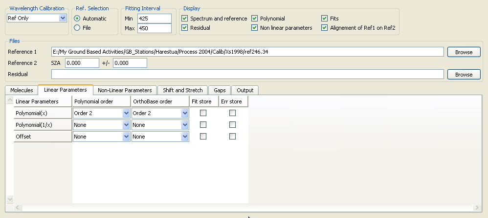
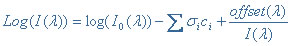

|
QDOAS Analysis Windows properties : Linear Parameters page  The degree of the polynomial (usually a polynomial in x) fitting the continuous part of the spectra is specified in this page. The values of the fitted coefficients account for the normalization applied on both the spectrum and the reference. Differential cross sections can be generated by orthogonalisation according to the definition of an orthogonal base formed with the component vectors (generally, a base of order 2) of the polynomial. The OrthoBase order column specify the degree of this orthogonal base. The correction of instrumental and/or atmospheric straylight or residual dark current signal requires the introduction of an offset parameter that is usually fitted as a non linear parameter in the Non-Linear Parameters page. In some specific cases (typically, in the near UV, around 300 nm), the signal of the spectrum is very low and in order to avoid logarithm errors when resolving the DOAS equation, the fit of a linear offset is preferred. The equation is just a little bit different :  Note that a linear offset and a non linear offset should not be fitted in the same spectral analysis window.
|